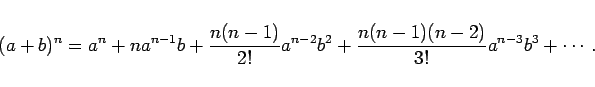

Inhalt Index DeskTop Bronstein

 Arithmetik Elementare Rechenregeln Ganzrationale Ausdrücke Binomischer Satz
Arithmetik Elementare Rechenregeln Ganzrationale Ausdrücke Binomischer Satz


Die Formel (1.39a) für den binomischen Satz kann auch auf negative und gebrochene Exponenten ausgedehnt werden. Für |b| <a ergibt (a+b)n eine konvergente unendliche Reihe, die binomische Reihe:
|  | (1.43) |